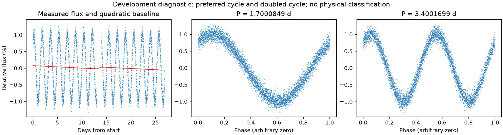
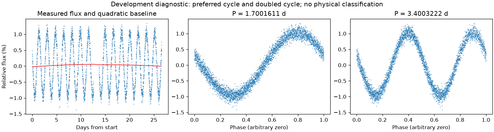

存在来源疑点，保留人工复核
亮度重复周期约 1.70012302 天。多组周期候选尚未排清，未选择最终周期；这不证明存在多种独立物理变化。
第二版周期：1.7000849363059076 天；状态：preferred_lightcurve_cycle。

左图红线是缓慢基线；右面两图去除该基线。若未通过周期要求，两图只展示得分最高的竞争解释。
| 竞争周期（天） | 交替周期预测改善 | 两组各自改善 | 通过初筛 |
|---|---|---|---|
| 1.7000849 | 97.2% | 97.2% / 97.2% | 是 |
| 3.4001699 | 97.1% | 97.1% / 97.2% | 是 |
| 3.5303072 | 21.8% | 19.9% / 24.1% | 是 |
| 3.2784628 | 19.0% | 16.4% / 21.5% | 否 |
| 1.5603044 | 4.7% | 8.0% / 1.4% | 否 |
| 1.8670715 | 4.6% | 1.6% / 7.9% | 否 |
| 0.7730830 | -16.8% | -17.8% / -15.7% | 否 |
| 0.9235446 | -17.9% | -16.5% / -19.3% | 否 |
“预测改善”衡量用一组周期的形状预测另一组，比只有缓慢基线好多少；负数表示更差。搜索和预测共用了资料，因此这不是可信概率，也不是独立验证。
辅助数据检查：背景 SAP_BKG、指向修正 POS_CORR、亮斑中心 MOM_CENTR，或明确提供的仪器通道。
相关性只提示需要检查来源。恒星自身变暗也可能导致亮斑中心移动，不能据此断定是仪器。
第二版周期：1.700161107057304 天；状态：preferred_lightcurve_cycle。

左图红线是缓慢基线；右面两图去除该基线。若未通过周期要求，两图只展示得分最高的竞争解释。
| 竞争周期（天） | 交替周期预测改善 | 两组各自改善 | 通过初筛 |
|---|---|---|---|
| 1.7001611 | 97.4% | 97.5% / 97.4% | 是 |
| 3.3999356 | 97.4% | 97.4% / 97.4% | 是 |
| 3.5323579 | 23.1% | 21.2% / 25.5% | 是 |
| 3.2779138 | 17.7% | 15.5% / 19.8% | 否 |
| 1.5555811 | 5.4% | 7.3% / 3.3% | 否 |
| 1.8732695 | 3.3% | 1.7% / 5.0% | 否 |
| 0.9235606 | -14.1% | -14.3% / -13.9% | 否 |
| 0.7778310 | -19.3% | -19.2% / -19.3% | 否 |
“预测改善”衡量用一组周期的形状预测另一组，比只有缓慢基线好多少；负数表示更差。搜索和预测共用了资料，因此这不是可信概率，也不是独立验证。
辅助数据检查：背景 SAP_BKG、指向修正 POS_CORR、亮斑中心 MOM_CENTR，或明确提供的仪器通道。
相关性只提示需要检查来源。恒星自身变暗也可能导致亮斑中心移动，不能据此断定是仪器。